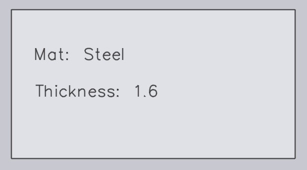

Import

Output settings
Save flat pattern - Enable this option for the flat pattern of an imported part to be saved.
Format for flat pattern - See JFY Core settings.
Flat pattern destination - This is the location where the flat pattern will be saved.
Import settings
Units for DXF files - See JFY Core settings.
Material lookup keys - Multiple lookup entries can be assigned using a comma separator between them. When a part is imported, Praxis uses these keys to search for material values. The searched values are then used to resolve the raw material. The original values are stored in the part Misc Properties.
Revision lookup keys - When a part is imported, the revision value from the raw part file (the part file being imported) is compared to the existing revision value in the repository. The import is abandoned if the revision is the same. The custom field mapping is now also supported for the DXF files. For the DXF files, the custom field data is extracted from the text layer in the drawing or a PPI attachment.
Part name keys - This option works similarly to the material and revision lookup keys. Set one or more Part name keys to use the PPI part name instead of the file name as the part name.
Thickness lookup keys - Multiple lookup entries can be assigned using a comma separator between them. When a part is imported, Praxis uses these keys to search for thickness values. The searched values are then used to resolve the thickness. The original values are stored in the part Misc Properties.
Thickness comparison fudge - This is used in looking up the raw material when a part is imported. Praxis tries to resolve the raw material after the material name and thickness are parsed. For more information, refer to [Thickness fudge] topic below.
Identify shapes after a flat is imported - When a part is imported, inner shapes within the part can automatically be recognised and identified.
Shape identification fudge - The shape identification fudge value can be set at:
-
Global level - This value is used as a default for all shapes.
-
Individual Shape Level - The default value can be overridden by setting the fudge value at the individual shape level. Selecting the shape in the Shape Library dialogue displays the fudge value. By default, this is set to 0, and the default global value is used for such shapes.
Rotate flat horizontally - Generally cutting machine tables are rectangular and wider. To enhance the tooling feasibility, rotate the part along the part width after the part is imported.
Part rotation threshold - Set this as the minimum number to allow rotation. Any part smaller than the value set will not be rotated.
Misc. settings
Enable pre-import external tools - Enable the pre-import external tools import option to enable Creo Reader. Praxis uploads the pre-extracted family instances of the dropped part. Please note that the instance extraction is performed during the part upload (as a pre-import operation), so the Creo software must be installed on the computer from where the part is being uploaded.
Ignore drawing colors in Flat thumbnails for clarity - Enable this option to generate the greyscale sharper thumbnails. The layer colours and text entities are ignored for the sake of image clarity.
Use only one Engine for all import tasks - When enabled, only one engine core is used for important tasks.
Thickness fudge
The Thickness comparison fudge chooses the closest sheet thickness value when a desired sheet thickness is not available in the inventory by comparing the thickness value of sheets in the inventory.
For example, let us assume the following:
-
We have a part with sheet thickness as 1.6 mm and material as steel.
 -
Thickness comparison fudge value is 0.1 mm.

-
Inventory has steel sheets with thickness 1.5 mm, 1.55 mm, and 1.7 mm.

JFY Plus chooses a sheet with the closest thickness value after comparing the Thickness comparison fudge value (0.1 mm) with the imported item (measuring 1.6 mm). In this case, 1.55 mm will be the selection.